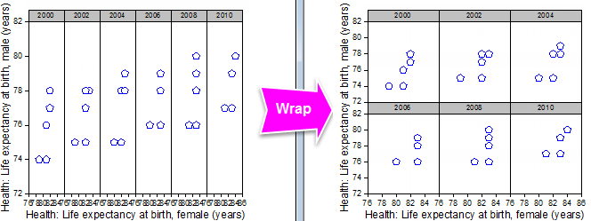
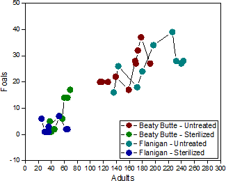
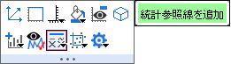

トレリスプロット
トレリスプロット
トレリスプロット、トレリスチャートまたはトレリスグラフ（「トレリスディスプレイ」または単に「トレリス」とも呼ばれる）は、M × Nパネルの配列として、多変量データをグラフ化する手段です。単純な例として、2つのカテゴリ変数（「条件付け変数」）のすべての組み合わせがプロットされている軸の共通セット（各パネルで繰り返される）を表すために、2つの「主要変数」を選択することができます。カテゴリ値の各組み合わせは、個別のパネルとしてプロットされます。
Originでは、データにカテゴリデータの列、またはある種のネストされたデータのサブグループを特徴付ける複数の列が含まれている場合、データをトレリスプロットとして作図できます。トレリスプロットはOrigin 2017から作成できます。
トレリスプロットを作図
- 1つあるいは、それ以上のワークシートのY列（あるいは、Y列内のある範囲）を選択します。
- 作図: カテゴリカル: トレリスプロットを選択します。
これによりplot_groupダイアログが開きます。

 | Origin 2018b以降、トレリスプロットでは、積み上げ縦棒、積み上げ横棒、100％積み上げ縦棒、100％積み上げ横棒などの多くのプロットタイプをサポートしています。
ボックスチャートもトレリスタイプの配置をサポートしています。下記のトレリスプロットでボックスチャートを作図をご覧ください。
|

|
以下のサンプルは、<Origin フォルダ>/Samples/Statistics/LogRegData.dat をデフォルト設定でインポート(データ: ファイルからインポート: 単一ASCII)して使用しています。このデータセットには2列のカテゴリデータの列Gender (Col(C))およびCareer_Change (Col(D))があります。カテゴリ変数Cityをもう一つ追加して、トレリスプロットを作成します。
- 標準ツールバーの列の追加ボタン
 をクリックして、シートの右側に空の列を追加します。 をクリックして、シートの右側に空の列を追加します。
- 1 - 350のセルをクリックして選択し、右クリックして列値の一律設定: テキストと数値の任意のセットを選択して開いたダイアログで次の設定をします。
- 追加した列のロングネームにCitiesを入力します。
- B列を選択して、作図: 2D: トレリスプロットを選択して、plot_groupダイアログを開きます。
- グラフタイプに散布図を選択します。区分グラフの変数の下の水平の三角形ボタンをクリックしてGender、Citiesの順で選択します。垂直では、Career_Changeを選択します。
OKをクリックしてトレリスプロットを作成します。
|
水平区分と垂直区分の配置を制御する
方法1：グループ化プロットダイアログの区分グラフの変数を使用して水平および垂直の配置を決定
方法2：作図の詳細の区分タブを使用して、作図後に区分内のプロットを再配置
- 作図の詳細の左パネルで、データプロットを選択します。右パネルには区分タブがあります。
- このタブでは、サイズやグループ列によって、区分を再設定できます。
|
|
- ファイル: インポート: 単一ASCIIを選択してデフォルト設定で<Origin exe folder>/Samples/Statistics/body.datをインポートします。このデータのageとgenderでそれぞれ分類し、heightとweightで作図します。
- height列を右クリックして、列XY属性の設定: X列を選択します。
- height と weight列を選択して、作図：カテゴリカル：トレリスプロットを選択し、plot_groupダイアログを開きます。
- 区分グラフの変数で、水平にage列を、垂直にgender列を選択します。
OKをクリックしてトレリスプロットを作成します。
|
| トレリスプロットがサポートするパネルの数には実際的な制限があり、主にシステムリソースに対する要求によって決まります。デフォルトでは、水平方向と垂直方向の両方とも50パネルに制限されます。これは、ほとんどのユーザーがあまり気にしない制限です。50パネルの制限は任意であり、システム変数@NOPの値を変更することでコントロールできます。@NOPで設定されたパネル制限を超えると、グループ化プロットダイアログはパネルの数が許容数を超えたことを報告し、グラフ作図は失敗します。システム変数の値を変更する方法については、このFAQにあるシステム変数の変更を参照してください。
|
データプロットの色の割り当て
指定列のカラーマッププロット
または、
- 作図の詳細ダイアログの「シンボル」タブで、シンボルの色: ポイント毎: インデックス/カラーマップを選択します。
色推移リストのカラーマッププロット
- 作図の詳細ダイアログの「シンボル」タブで、シンボルの色: ポイント毎: 増分を選択します。
- 区分タブで、内部区分や中間区分でのプロットカラー増分を設定します。
区分の折り返し
グループ化列に多数のカテゴリがある場合、トレリスプロットはスペースで圧迫されてしまうことがあります。解決策として、区分を折り返して、1つの行または列を複数の行/列に分割することが挙げられます。
- プロット上でダブルクリックして作図の詳細ダイアログを開きます。
- 区分タブで、列/行が上限を超えた場合は区分を折り返すにチェックをつけ、編集ボックスに数を入力します。
|
|
次のクイックサンプルでは、ラーニングセンターサンプルOPJの一つを使用します。
- メニューからヘルプ：ラーニングセンターを選択して、ラーニングセンターダイアログを開きます。
- 左側のグラフサンプルタブを選択して、ドロップダウンリストでトレリスプロットを選択します。
- 2番目の行の最初のセルをダブルクリックしてOPJを開きます。ワークブックBook9をアクティブにします。Yearで分類したfemaleとmaleのトレリスプロットを作成して、3×2区分に折り返します。
- 列Cで右クリックし、ショートカットメニューから｢列XY属性の設定：X列を選択します。
- 列CおよびDを選択して、作図: 2D: トレリスプロットを選択し、plot_groupダイアログを開きます。
- グラフタイプに散布図を選択します。
- 区分グラフの変数:水平でB列を選択します。OKをクリックすると、トレリスプロットが作成されます。
- 散布図上でダブルクリックして、作図の詳細（プロット属性）ダイアログを開きます。区分タブで、列/行が上限を超えた場合は区分を折り返すにチェックを付け、編集ボックスに3を入力します。
- 
|
複数のパネルを1つのパネルにまとめる
- plot_groupダイアログで複数の区分に分類されたプロットのセットを作成します。
- トレリスプロットをダブルクリックして作図の詳細ダイアログを開きます。区分タブで、水平区分または垂直区分の区分を重ねるにチェックをつけます。
|
|
次のクイックサンプルでは、ラーニングセンターサンプルOPJの一つを使用します。
- メニューからヘルプ：ラーニングセンターを選択して、ラーニングセンターダイアログを開きます。このダイアログで、左パネルのグラフサンプルを選択して、ドロップダウンリストでトレリスプロットを選択します。
- 右下のグラフ"Trellis - Overlap Panels with Multiple Categories Combination"をダブルクリックします。
- Book8をアクティブにします。列Location および Treatmentでグループ化された線+シンボルのセットを1つのパネルにプロットします。
- C列を選択して、作図: カテゴリカル: トレリスプロットを選択し、グループ化プロットダイアログを開きます。
- グラフタイプで線+シンボル図を選択します。
- 区分グラフの変数:水平でFとG列を選択します。OKをクリックすると、トレリスプロットが作成されます。
- トレリスプロットをダブルクリックして作図の詳細ダイアログを開きます。区分タブで、水平区分の区分を重ねるにチェックをつけます。
- シンボルタブで、シンボルの色: ポイント毎:推移開始を赤にします。
- 区分タブに移動します。区分での推移を中間区分にします。
- 
|
トレリスプロットでボックスチャートを作図
- ボックスチャートを作図します。
- グラフ上でダブルクリックして作図の詳細ダイアログを開きます。区分パネルでカテゴリ列を指定して、ボックスを分割します。
|
|
次のクイックサンプルでは、ラーニングセンターサンプルOPJの一つを使用します。
- メニューからヘルプ：ラーニングセンターを選択して、ラーニングセンターダイアログを開きます。開いたダイアログの左側でグラフサンプルを選択して、上部のドロップダウンリストでトレリスプロットを選択します。
- "Trellis Plots - Box Charts"のグラフをダブルクリックして開きます。
ワークブックTrellis Plots - Box Chartsには、自動車ブランドのBMW と Ferrariの売り上げが入力されています。これをボックスチャートとしてプロットし、Regionによって異なる区分に分離してそれぞれの区分で平均線を表示します。
- ボックスチャートを作成します。Sheet1 のCとD列を選択して、作図 > 2D > ボックス: グループ化したボックスチャート-素データを選択してボックスチャートを作図します。
- ボックスをRegionによって異なる区分に分離します。ボックスをダブルクリックして作図の詳細ダイアログを開きます。区分タブを開きます。水平区分の列によるを選択して、列としてB(Y):Regionを選びます。
- 各区分に平均線を追加します。Y軸でダブルクリックして軸ダイアログを開きます。参照線タブを開きます。以下の設定で参照線を追加します。

|
軸表示
トレリスプロットの各パネルは、トレリス中の他のパネルと共通の軸セットを共有しています。これらの軸はこれまでに紹介したplot_groupダイアログおよび作図の詳細作図の詳細ダイアログにおいては設定できませんのでご注意ください。
軸の設定は軸ダイアログボックスで行います。 このセクションでは、軸をカスタマイズしてグラフを読みやすくする方法について解説します。
軸ダイアログボックスを開くには：
- 軸または軸目盛ラベル上でダブルクリック
または、
- グラフをアクティブにして、メインメニューからフォーマット：軸スケール：X/Y/Z軸を選択します。
グリッド線
次の例では、垂直軸に大麦の品種を、水平軸に地域ごとの産出高をとっています。垂直軸のグリッド線を設定すると、プロットが見やすくなります。
これまでの例では、目盛ラベルをプロットデータと結びつけるために主グリッド線を 利用していました。次の例では、隣接したラベルとポイントから目盛ラベルとプロットポイントを分けるために副グリッド線を利用します。
目盛ラベル表
目盛ラベル表は、特にカテゴリカルデータのグラフ軸のマルチレベルラベリングを作成するのに有効です。目盛ラベル表はボックスチャート、縦/横棒グラフにおいて使用できますが、Origin 2018bからはトレリスプロットでも利用可能となりました。
軸ダイアログ：目盛ラベル表を開くには
- 目盛ラベル上でダブルクリックするか、フォーマット：軸目盛のラベルと選択します。
- 目盛ラベルタブをクリックしてフォーマットおよび表 副タブを開いて目盛ラベルの設定をします。
軸ダイアログログボックスの設定の詳細については、軸ダイアログ目盛ラベルタブをご覧ください。
区分見出しの編集
デフォルトでは、トレリスグラフの区分見出しには、対応するカテゴリー値が表示されますが、これは他のものに設定可能です。 たとえば、次の例の左図では文字数値列の内容（A386、C334）がデフォルトで表示されています。
これでは、データをよく知らい人はわかりにくく感じます。他の方法として、グラフの凡例やテキストラベルの追加も可能ですが、見出しで表示する文字列を編集することもできます。このケースでは、カテゴリのみを表示するデフォルトのオプション<Panel1>から、「列のロングネーム＝カテゴリ」の文字列を表示する<Panel1, @LA>=<Panel1>に変更します。
文字列ボックスの右側にある矢印ボタン をクリックすると、文字列作成のヒントを表示できます。
をクリックすると、文字列作成のヒントを表示できます。
文字列の使用については、LabTalkヘルプファイルの@Optionsの完全リストをご覧ください。
| Note:このセクションでは、目盛ラベル表と区分見出しについて解説しました。この2つは外見上は似ていますが、区分見出しはトレリスプロットでのみ利用でき、目盛ラベル表はボックスチャートや棒グラフなど用いられるより一般的なものです。どちらもグラフの軸ダイアログボックスから編集できます。
|
副目盛ラベルタブのカスタム
目盛ラベルに長いテキスト文字列を入力した場合、フォントサイズを変更する以外にも、(a) テキストラベルを折り返したり、(b) ラベルを回転して調節できます。どちらも軸ダイアログのフォーマットタブから調整できます。

- 目盛ラベルタブをクリックしてフォーマットサブタブでフォント、サイズ、回転またはテキストを折り返すを選びます。
統計参照線を追加
各トレリスパネルに主要な統計値を示す参照線を追加できます。ラベル付けも可能です。
- 最も簡単な操作は、レイヤレベルのミニツールバーにある統計参照線を追加ボタンを使用する方法です。パネルの内部をクリックしてミニツールバーを表示し、統計参照線を追加ボタンをクリックして開くフライアウトメニューから統計値を選択します。このボタンは自動で各パネルにおける構文を処理します。
- 
- または、多少手間はかかりますが、軸ダイアログの参照線タブのコントロールを使用して線とラベルを追加することもできます。